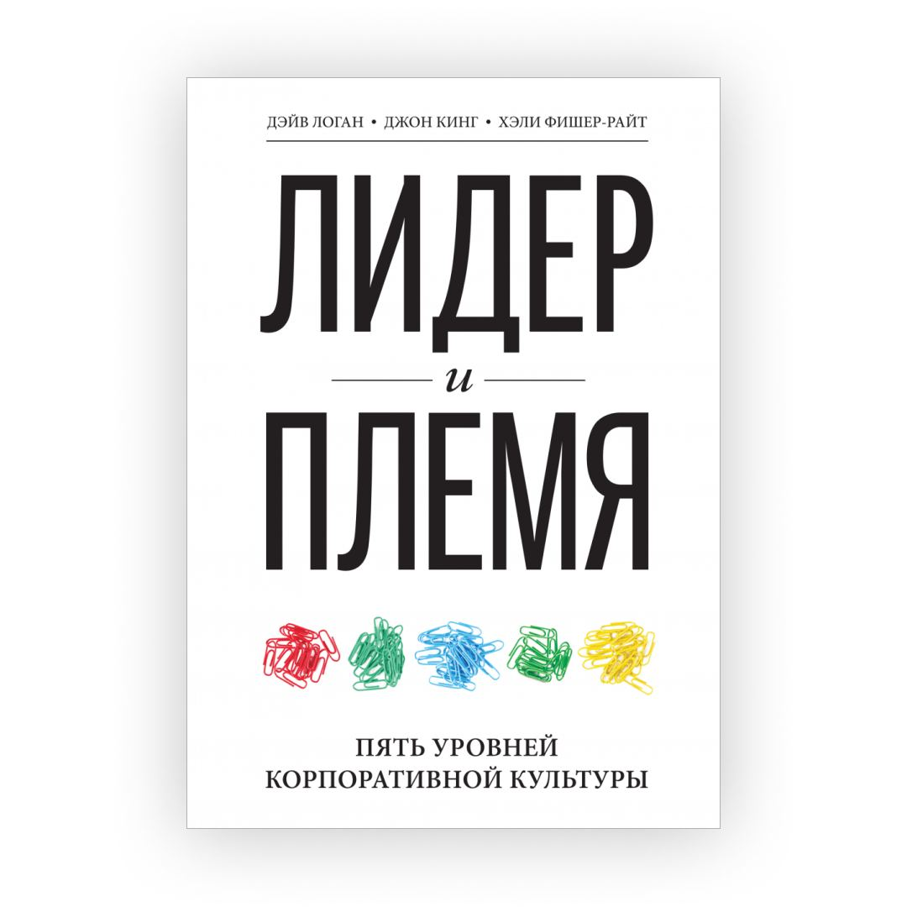

Хочется поделиться очень крутой книгой по культуре. Это книга-исследование разных культур и распределение их на 5-уровней эффективности.
Первые два уровня — это преступные группировки и неэффективные организации.
На третьем уровне находится большинство компаний. Это уровень внутренней конкуренции. В таких компаниях говорят «Я крутой» (подразумевая при этом «а ты нет»).
Эффективные культуры начинаются с четвертого уровня. На этом уровне команда переросла внутреннюю конкуренцию и сфокусировалась на внешней. Здесь говорят «Мы крутые» (по сравнению с нашими конкурентами). Таких компаний не больше 10% и, как правило, они успешны.
Пятый уровень, где эффективность культуры максимальная — это когда компания переросла внешнюю конкуренцию и соревнуется с возможностями этого мира. Отличный пример — это Илон Маск, цель которого — колонизация Марса.
Эта книга помогла перевести культуру агентства на уверенный 4 уровень, на котором эффективность намного выше.
Сергей Прусс